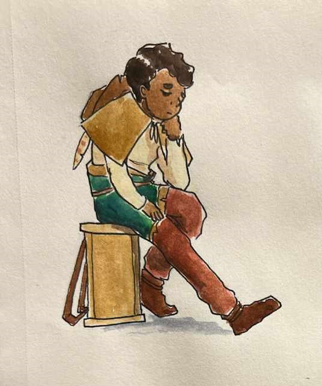
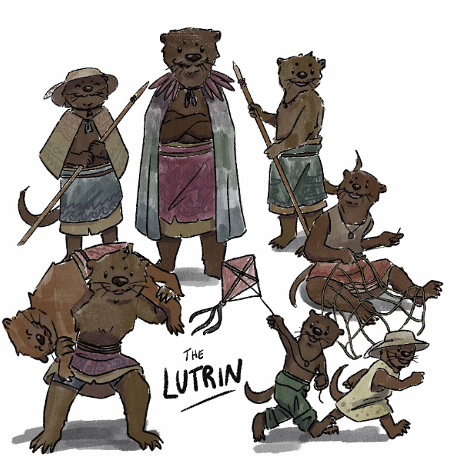
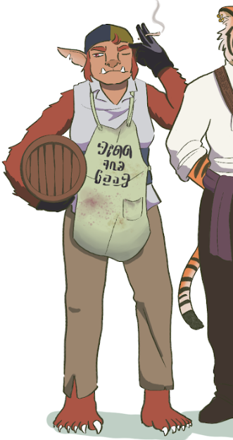
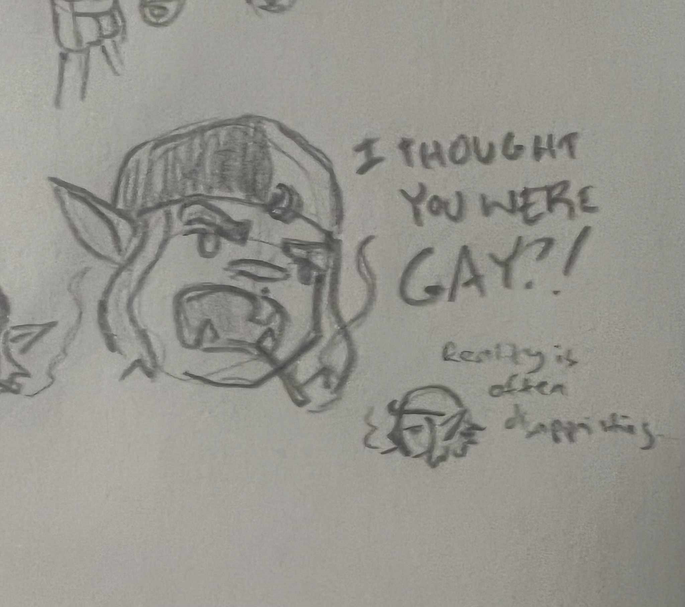
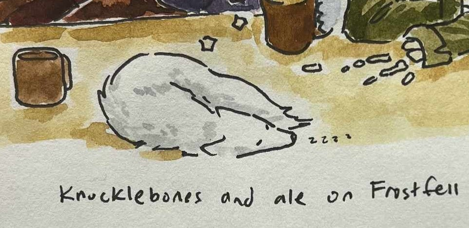

It's easy to love all of the people you meet during an adventure, but hey, everybody has favorites. Here are some of mine:
Nedan

Nedan is a recurring character that gets dunked on constantly by my party members. He helps us on our quest by locating magical items, though he has no control over the amount of detail that he gives us. He hid in Wiyak village among the Lutrin (otterfolk). He's had a lot of bad days both with and without us, and I think he qualifies as a tumblr sexyman (a man that isn't attractive, but somehow still attracts a lot of fans that are insistent that he is, in fact, one of the hottest guys to exist).
Kiona

Disclaimer: Kiona is not pictured in the above image. This is just to illustrate what the Lutrin people look like.
Kiona is an old lutrin woman who tends the village garden. When we arrived, the elders of her village required us to prove ourselves. While all of the other members of my party were doing harrowing tasks such as stealing feathers from owlbears and hunting rainbow eels, I was assigned to Kiona as an assistant gardener. We spent a nice afternoon together that ended in tea. She gave me a seed packet, which acted as a minor healing potion.
Chrorr

Chrorr is a bugbear cook we met on the Black Ram, a pirate ship that we sailed on for a few weeks. She is my all-time favorite humanoid NPC, and I would die for her in real life. She comes from the same city as I do, Berjadalsa. We bonded, and I gifted her a snapback I picked up on my adventure that has “Wenches Desire Me, Gators Fear Me” embroidered on the front.
Here's an extra doodle that my DM did of her that I really love:

Cecil (My Familiar)

Cecil is my familar. I play an abjuration wizard from the northern-most town on the continent we are adventuring on, so of course my familar had to be a small, fluffy Arctic fox. My DM and I have decided that if my familar dies, it can't be resummoned, so I keep him tucked into my coat during battle. He does occasionally give me advantage on perception checks though, and he is cool to the touch, which is wonderful to have around my neck while we're travelling.
After a strange mishap during an advanture, he turned into a small boy that couldn't speak. He just wandered around and followed me until he turned back into a fox. I don't know why, but this delighted me to no end. He was so cute as a human.